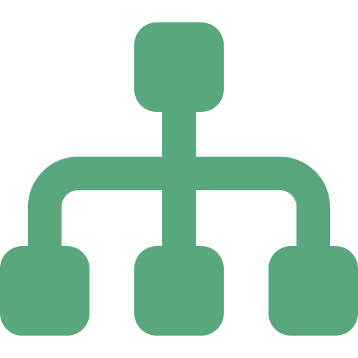

Portada
Arquitectura de Software
Semana 14 — Esquemas para el Uso de Servicios Web y Arquitecturas Orientadas a Servicios (SOA)
De aplicaciones monolíticas a servicios reutilizables — apertura de la Unidad 4 · Universidad de Antioquia · Ingeniería de Sistemas · 2554608 · 2026-2

Apertura
Un memo interno de 6 reglas.
Más de US$90.000 millones de ingresos al año.
Amazon, 2002 → Amazon Web Services, hoy — según los reportes financieros públicos de Amazon.com Inc.
Transición
¿Cómo una librería en línea termina vendiendo infraestructura de nube?
En 2002, Amazon todavía era, para el público, una tienda de libros que había sobrevivido al estallido de la burbuja puntocom. Veinte años después, su unidad de negocio más rentable no vende ni un solo libro: alquila servidores, bases de datos y servicios en la nube a otras empresas.
El puente entre esas dos historias es una decisión puramente arquitectónica, tomada por orden directa de su fundador, sobre cómo debían comunicarse los sistemas internos de la compañía. Con ese caso abrimos la Unidad 4 — Los Servicios Web en la Arquitectura.
Caso · Ficha técnica
El mandato de Jeff Bezos, Amazon, 2002
| Empresa | Amazon.com Inc. |
|---|---|
| Autor del mandato | Jeff Bezos, fundador y CEO |
| Año | 2002 |
| Cómo se conoció públicamente | Relatado por Steve Yegge, ingeniero que trabajó en Amazon entre 2002 y 2005, en un memo interno de Google que se hizo público accidentalmente en 2011 (conocido como el "Google Platforms Rant") |
| Problema que atacaba | Equipos internos que accedían directamente a las bases de datos de otros equipos, generando acoplamiento fuerte y bloqueos mutuos para crecer |
| Consecuencia a largo plazo | Nace la infraestructura que en 2006 se convertiría en Amazon Web Services (AWS) |
Uno de los relatos de arquitectura corporativa más citados de la industria — repetido en libros, cursos y artículos técnicos por más de veinte años.
Caso · El mandato, tal como se relata
Seis reglas, sin excepciones
1. Todos los equipos expondrán de ahora en adelante sus datos y su funcionalidad a través de interfaces de servicio.
2. Los equipos deben comunicarse entre sí únicamente a través de esas interfaces.
3. No se permite ninguna otra forma de comunicación entre procesos: nada de enlaces directos, nada de lectura directa del almacén de datos de otro equipo, nada de memoria compartida, ningún atajo. La única comunicación permitida es a través de llamadas a la interfaz de servicio, por red.
4. No importa qué tecnología usen.
5. Todas las interfaces de servicio, sin excepción, deben diseñarse desde el principio para ser externalizables.
6. Quien no cumpla esto será despedido.
Paráfrasis ampliamente citada del mandato, tal como la reprodujo Steve Yegge en 2011.
Caso · La consecuencia
De la regla 5 nace un negocio nuevo
La regla más inusual del mandato no era técnica, era estratégica: cada interfaz de servicio debía diseñarse como si algún día fuera a exponerse a clientes externos, no solo a otros equipos internos.
Esa exigencia obligó a construir servicios con contratos claros, documentación real y niveles de servicio serios — exactamente lo que se necesita para venderlos como producto. En 2006, Amazon lanzó Amazon S3 (almacenamiento) y Amazon EC2 (cómputo) al público: la infraestructura interna, ya diseñada para ser externalizable, se convirtió literalmente en Amazon Web Services.
Una decisión de arquitectura de software — cómo se comunican los componentes internos — terminó creando una de las unidades de negocio más rentables de la historia de la compañía.
Transición
Lo que Amazon impuso por mandato, la industria lo formalizó como estilo
Lo que el memo de Bezos describe — sistemas independientes que exponen su funcionalidad a través de interfaces de servicio, sin accesos directos entre sí — es, en esencia, la definición operativa de un estilo arquitectónico que ya existía en la literatura: SOA, Arquitectura Orientada a Servicios.
Hoy formalizamos ese estilo: sus principios, sus componentes y el debate que ha generado durante más de veinte años.
Concepto
¿Qué es la Arquitectura Orientada a Servicios (SOA)?
SOA (Service-Oriented Architecture) es un estilo arquitectónico en el que la funcionalidad del sistema se organiza como un conjunto de servicios independientes, débilmente acoplados, que se comunican entre sí a través de interfaces bien definidas y accesibles por red.
Un servicio, en este contexto, es una unidad de funcionalidad de negocio autocontenida (ej. "procesar un pago", "consultar inventario") que un consumidor invoca sin conocer ni depender de cómo está implementada internamente.
Concepto
Los principios que definen un servicio SOA
| Principio | Qué exige |
|---|---|
| Bajo acoplamiento | El servicio no depende de la implementación interna de otros servicios, solo de sus contratos. |
| Abstracción | El servicio expone solo lo necesario a través de su interfaz; oculta su lógica interna. |
| Reusabilidad | Se diseña para que múltiples consumidores lo usen, no para un solo caso puntual. |
| Autonomía | El servicio controla su propia lógica y sus propios recursos. |
| Statelessness | Idealmente no conserva estado de conversación entre una invocación y otra. |
| Discoverability | Puede describirse y encontrarse a través de un registro/catálogo de servicios. |
| Composability | Varios servicios pueden orquestarse juntos para formar un proceso de negocio mayor. |
Las reglas 2 y 3 del mandato de Bezos (s05) son, en esencia, bajo acoplamiento y abstracción impuestos por decreto.
Concepto · Repaso
Proveedor, consumidor y registro — el patrón Broker, otra vez
En la Semana 6 vieron el patrón POSA Broker: un intermediario que permite a los componentes distribuidos comunicarse invocándose mutuamente sin conocerse directamente. SOA reutiliza exactamente esa idea con tres roles:
- Proveedor del servicio: implementa la funcionalidad y publica su contrato.
- Consumidor del servicio: invoca el servicio a través de su interfaz publicada, sin conocer su implementación.
- Registro/catálogo de servicios: donde el proveedor publica su contrato y el consumidor lo descubre — el rol de "broker" del patrón original.
SOA no inventó un concepto nuevo de comunicación distribuida: formalizó a nivel de toda la empresa un patrón que POSA ya describía a nivel de componentes.
Concepto
El Enterprise Service Bus (ESB)
El Enterprise Service Bus (ESB) es la implementación de infraestructura más común del rol de intermediario en SOA: un middleware centralizado que enruta, transforma y orquesta los mensajes entre los servicios de una organización.
- Enrutamiento: decide a qué servicio debe llegar cada mensaje.
- Transformación: adapta el formato de datos entre un servicio y otro cuando no coinciden.
- Orquestación: coordina la secuencia de llamadas a varios servicios para completar un proceso de negocio.
El ESB centraliza la lógica de integración — una ventaja para el gobierno del sistema, pero también, como verán en s16, uno de los puntos más criticados de SOA en su implementación clásica.
Contraejemplo
SOA vs. aplicación monolítica
| Monolito | SOA | |
|---|---|---|
| Acceso a datos entre módulos | Directo, comparten el mismo proceso y a veces la misma base de datos | Solo a través de la interfaz de servicio publicada |
| Despliegue | Una sola unidad desplegable | Cada servicio se despliega de forma independiente |
| Tecnología | Un solo stack para toda la aplicación | Cada servicio puede usar su propia tecnología (regla 4 del mandato, s05) |
| Escalar una sola función | Hay que escalar toda la aplicación | Se escala solo el servicio que lo necesita |
| Punto de falla de un cambio | Un error puede tumbar toda la aplicación | Idealmente queda contenido al servicio que falló |
Exactamente el problema que el mandato de Bezos atacaba en s04: equipos leyendo directamente el almacén de datos de otro equipo, como en la columna "Monolito".
Concepto
El esquema del servicio: el contrato antes que el código
Un esquema (o contrato) de servicio web es la descripción formal de qué operaciones expone un servicio, qué datos espera recibir y qué datos devuelve — independiente de cómo esté implementado por dentro. Es la pieza que hace posible el bajo acoplamiento del principio visto en s09: el consumidor programa contra el esquema, nunca contra el código del proveedor.
Este enfoque se conoce como diseño "contract-first": el equipo define primero el contrato del servicio, y solo después implementa la lógica que lo cumple. Los formatos concretos para escribir ese contrato — WSDL para SOAP y esquemas de recursos para REST — son el tema completo de la próxima sesión.
Concepto
Granularidad: servicios gruesos vs. servicios finos
Diseñar un servicio SOA implica decidir su granularidad: cuánta funcionalidad de negocio agrupa una sola interfaz de servicio.
- Servicio de grano grueso (coarse-grained): expone una operación de negocio completa en una sola llamada (ej. "procesarPedido", que internamente valida stock, cobra y genera la factura). Menos llamadas de red, pero interfaces más rígidas.
- Servicio de grano fino (fine-grained): expone operaciones pequeñas y muy específicas (ej. "validarStock", "cobrarPago", "generarFactura" por separado). Más flexible para componer, pero más llamadas de red por proceso.
En SOA clásico se suele preferir el grano grueso para reducir el tráfico entre servicios distribuidos — una decisión de rendimiento, no solo de diseño.
Concepto
Gobierno SOA (SOA governance): por qué no basta con publicar el contrato
Cuando una organización tiene docenas o cientos de servicios, publicar el contrato no es suficiente — se necesita gobierno: el conjunto de políticas, estándares y procesos que garantizan que todos los servicios se diseñan, versionan y documentan de forma consistente.
- Estándares de diseño: convenciones comunes de nombres, formatos de error, versionado.
- Catálogo central: un registro donde se puede saber qué servicios existen y quién es dueño de cada uno.
- Control de cambios: evitar que un equipo rompa el contrato de un servicio del que otros ya dependen.
Sin gobierno, una organización termina con decenas de servicios redundantes y contratos inconsistentes — el mismo problema de desorden que SOA prometía resolver, pero a otra escala.
Tensión
¿SOA y microservicios son lo mismo?
En la Semana 8 ya vieron el patrón Microservicios del catálogo POSA. La pregunta que suele generar confusión: si ambos son "servicios pequeños comunicándose por red", ¿en qué se diferencian realmente de SOA?
| SOA clásico | Microservicios | |
|---|---|---|
| Intermediario | ESB centralizado (s11), con lógica de orquestación propia | Comunicación directa entre servicios, sin lógica de negocio en el middleware |
| Base de datos | A menudo compartida entre varios servicios | Cada servicio con su propia base de datos |
| Alcance típico | Toda la empresa, integrando sistemas grandes y heterogéneos | Una sola aplicación descompuesta en piezas pequeñas |
| Tamaño del servicio | Frecuentemente de grano grueso (s14) | Deliberadamente de grano fino |
No son lo mismo, pero tampoco son opuestos: los microservicios son, para muchos autores, una forma disciplinada y más ligera de aplicar los mismos principios de SOA vistos en s09.
Concepto en disputa
"SOA is dead" — el debate de 2009
En enero de 2009, la analista Anne Thomas Manes, de Burton Group, publicó un artículo influyente titulado "SOA is Dead; Long Live Services". Su argumento: muchos proyectos SOA de gran escala fallaron por exceso de gobierno, ESBs sobrecargados de lógica de negocio, y proyectos vendidos como "productos" en vez de tratados como una disciplina arquitectónica continua.
No fue una afirmación de que los servicios como estilo hubieran fracasado — su propio título lo dice: "SOA ha muerto; larga vida a los servicios". Lo que criticaba era la forma en que la industria había implementado SOA, no la idea de comunicar sistemas mediante interfaces de servicio.
El debate sigue vivo hoy: muchos ven en el auge de los microservicios y las APIs REST (próxima sesión) la reencarnación disciplinada de las mismas ideas que SOA proponía desde el principio.
Interacción
Auditen su propio proyecto con las reglas del mandato
En equipos, revisen su proyecto de CodeF@ctory y respondan:
- ¿Algún componente de su sistema accede directamente a datos de otro componente, sin pasar por una interfaz de servicio? Según la regla 3 del mandato (s05), eso sería una violación.
- Si tuvieran que exponer una sola funcionalidad de su proyecto como servicio "externalizable" (regla 5), ¿cuál sería y qué contrato necesitaría?
- ¿Sus servicios, si los tienen, son de grano grueso o fino (s14)? ¿Fue una decisión consciente?
5 minutos · respondan en voz alta o en el chat
Síntesis
Ideas clave de hoy
- El mandato interno de Jeff Bezos en Amazon (2002) impuso por decreto los principios de bajo acoplamiento y abstracción, y su regla de diseño "externalizable" terminó creando Amazon Web Services.
- SOA organiza la funcionalidad como servicios independientes, débilmente acoplados, comunicados por interfaces — con principios como reusabilidad, autonomía, statelessness, discoverability y composability.
- El ESB es la pieza de infraestructura clásica que enruta, transforma y orquesta mensajes entre servicios; el esquema/contrato es lo que el consumidor programa, nunca la implementación interna.
- La granularidad (grano grueso vs. fino) y el gobierno son decisiones de diseño explícitas, no detalles menores, al construir un sistema SOA.
- SOA y microservicios comparten principios, pero difieren en el rol del intermediario, la base de datos y el alcance típico — el debate "SOA is dead" (2009) sigue vigente en esa discusión.
Síntesis · Lo que viene en la Unidad 4
Cuatro sesiones sobre servicios web, dos semanas
Esta es la primera de cuatro sesiones de la Unidad 4 — Los Servicios Web en la Arquitectura, repartidas en dos semanas:
- Semana 14, hoy: Esquemas para el uso de servicios web y Arquitecturas SOA.
- Semana 14, próxima sesión: Estándares y protocolos — SOAP, WSDL, UDDI, RESTful, HATEOAS, HAL y GraphQL.
- Semana 15: Web APIs e Implementación de servicios web.
- Semana 15, cierre: Arquitecturas Cloud Native, Microservicios (DDD, CQRS, Event Sourcing, API Gateway) y Serverless (FaaS).
Hoy sentamos el vocabulario y los principios (servicio, contrato, acoplamiento, granularidad, gobierno); las próximas tres sesiones bajan a los estándares concretos, la implementación real y las arquitecturas modernas que corren sobre esos mismos principios.
Cierre
Para la próxima sesión
- Repasar los principios de SOA (s09) y el rol del ESB (s11): son la base conceptual para entender por qué existen tantos estándares distintos de servicios web.
- Pensar en al menos una operación de su proyecto CodeF@ctory que necesitarán exponer como servicio — la usaremos como ejemplo al comparar SOAP y REST.
La próxima sesión de la Semana 14 cubre Estándares y Protocolos: SOAP, WSDL, UDDI, RESTful, HATEOAS, HAL y GraphQL — las formas concretas de escribir el "esquema" del que hablamos hoy.